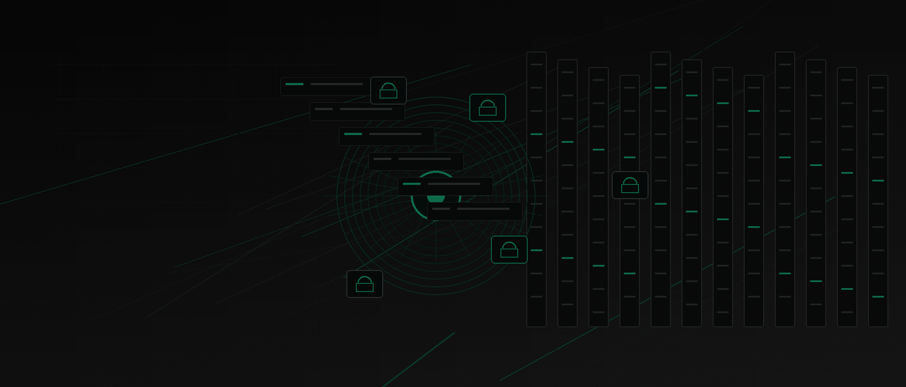
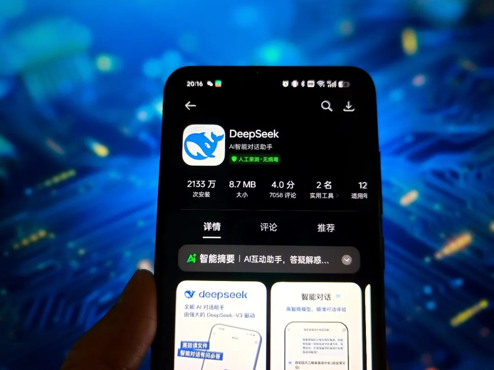
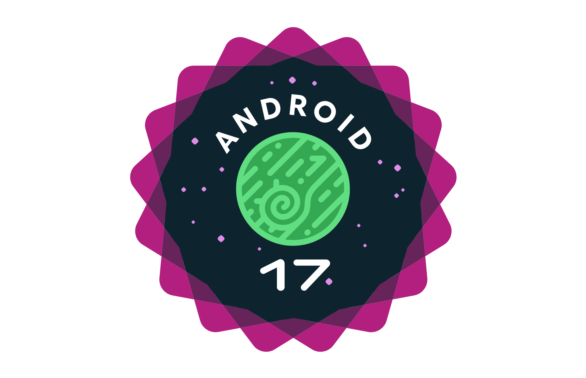
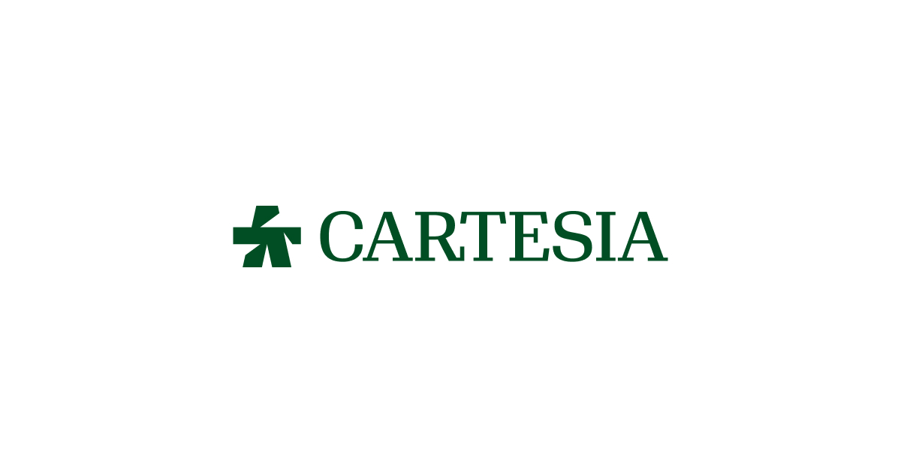
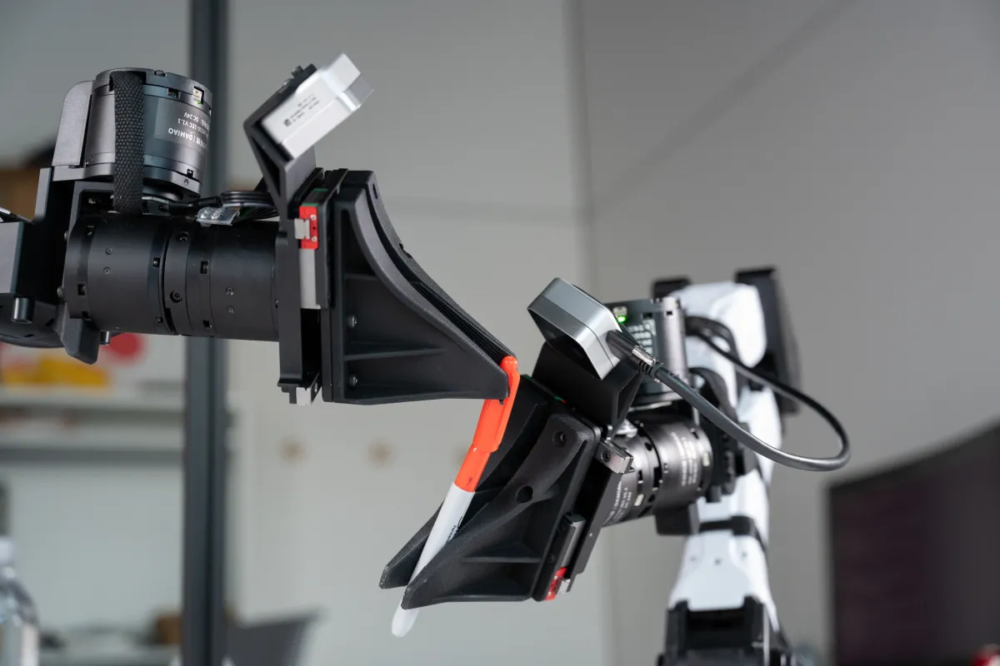
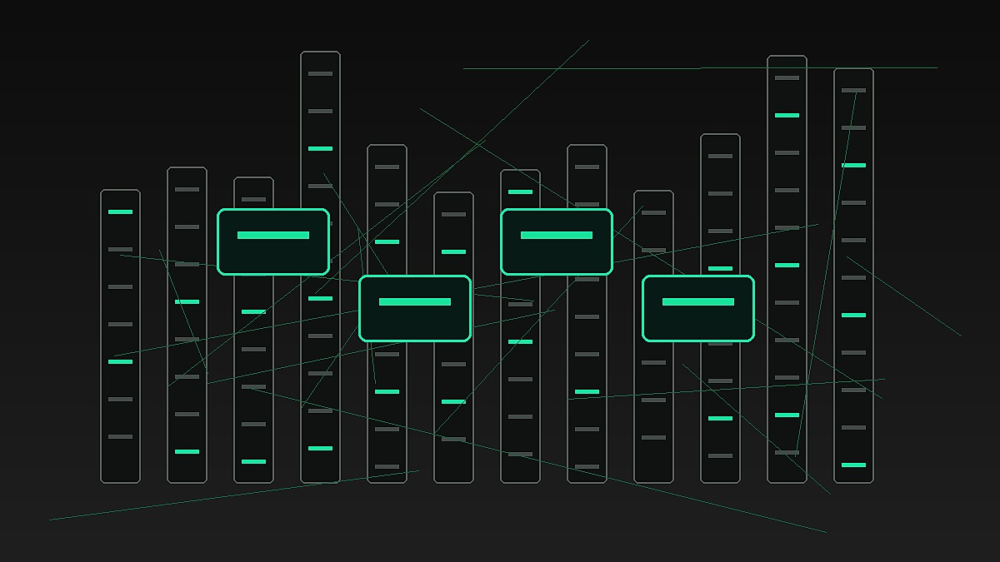
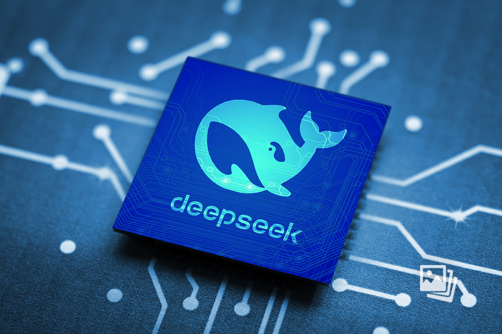

Janet 快车箱
AI Daily Briefing
2026-06-18
VOL 261

今天共同主线很清楚：AI 不再只是模型榜单，而是被政府、企业、资本和设备系统一起拉进受控生产环境。G7 讨论主权 AI，Anthropic 的 Fable/Mythos 被出口管制拖下线，Android 17 把 AppFunctions 做成本地 agent 工具层，印度数据中心和机器人训练数据公司都在补底座。
对中国创作者和企业来说，这意味着“能不能用最强模型”会越来越像供应链问题，而不是单纯产品选择。真正能赚钱的不是再写一个聊天壳，而是把权限、数据、审计、成本和场景交付打通，让 AI 在真实流程里可控地干活。
接下来 2-4 周盯三件事：美国会不会把 frontier model 审批制度化，亚洲企业会不会加速买本地算力和本地模型，以及 coding agent、机器人、移动 OS 会不会把工具调用权限变成新入口。
AP 于 2026 年 6 月 17 日报道，OpenAI CEO Sam Altman、Google DeepMind CEO Demis Hassabis、Anthropic CEO Dario Amodei，以及 Cohere、Mistral、Black Forest Labs、Domyn、Sakana AI、Synthesia 等公司负责人在法国 G7 峰会参加 AI 工作午餐。会议背景是欧洲、加拿大等经济体对美国 AI 公司支配力的焦虑，尤其是 Anthropic Fable 5 和 Mythos 5 被美国政府限制后，盟友开始重新讨论“不能被单一国家切断模型访问”的问题。
Axios 于 2026 年 6 月 17 日分析，美国政府要求 Anthropic 下线 Fable 5 和 Mythos 5 后，frontier model 监管从理论争论变成现实冲突。报道称，亚马逊曾向美国官员提出有关 Fable guardrails 可被绕过的网络安全担忧，随后政府以出口控制方式介入，行业人士开始讨论是否需要一个懂技术的 AI 专门监管机构，把公司测试、外部审计和政府权力结合起来。

Anthropic 于 2026 年 6 月 17 日宣布首尔办公室正式开业，并披露一批韩国生态合作。NAVER 已在整个工程组织部署 Claude Code，Nexon 用 Claude Code 写、审和发布游戏代码；LG CNS、Hanwha Solutions、Samsung SDS 也在员工和集团级场景中部署 Claude，Channel Corp 则把 Claude 用在 Channel Talk 客服和销售数据分析中。

TechXplore 援引 AFP 于 2026 年 6 月 17 日报道，DeepSeek 在首轮融资后估值超过 500 亿美元。本轮融资金额超过 500 亿元人民币，约 74 亿美元，消息源来自 The Wall Street Journal 和 The Information；报道称创始人梁文锋本人投入约 200 亿元人民币，并通过有限合伙结构保持控制权。

TechCrunch 于 2026 年 6 月 17 日报道，加拿大养老金投资机构 CPP Investments 承诺向印度数据中心运营商 CtrlS 投入最多 700 亿卢比，约 7.41 亿美元。其中 400 亿卢比用于收购 CtrlS 8.2% 股权，另有最多 300 亿卢比投入 hyperscale data center 园区合资公司，CPP 将持有合资公司 48% 股权。

TechCrunch 于 2026 年 6 月 16 日 3:34 PM PDT 报道，Anthropic 与美国政府围绕 Fable 5、Mythos 5 的冲突未必伤害企业销售。Ramp 基于 7 万多家企业支付数据称，Anthropic 在 5 月企业 AI 订阅支出份额上升 2.5 个百分点至 41%，超过 OpenAI 的 39.5%；企业 API 消费中，Claude Code 和 Opus 系列仍是重要支出来源。

Android Developers Blog 在 2026 年 6 月 16 日发布 Android 17，称 Android 正从操作系统转向 intelligence system。新版本扩展 AppFunctions，让应用把能力暴露成 Android MCP 的本地工具，Gemini 等 AI agents 可以发现并执行这些 AppFunctions；Google 同时提供 AppFunctions agent skill，帮助开发者生成 Kotlin 代码和 KDoc。
OpenLM.ai 的 GLM-5.2 条目显示，Z.ai 在 2026 年 6 月 13 日推出面向 coding 和 long-horizon tasks 的 GLM-5.2，主打 100 万 token 上下文，并以 MIT 开源路线作为差异点。多家技术跟踪站点称该模型面向 repo-scale agentic coding，强调长上下文、商业可用和开放部署。

Cartesia 官网显示，Sonic-3.5 和 Ink-2 被定位为面向 voice agents 的实时语音与转写模型，强调低延迟、多语言、情绪表达和企业语音场景。该公司展示 ServiceNow、Elise AI 等客户案例，主张语音 agent 需要在质量和速度之间不再二选一。

TechCrunch 于 2026 年 6 月 17 日报道，机器人训练数据公司 XDOF 从 Thrive Capital、Spark Capital、a16z、Lux、WndrCo 等投资方获得 7000 万美元融资，并从 stealth 状态公开。公司称已有约 60 名员工和 20 个客户，包括若干 frontier AI labs；它还与 UC Berkeley AI Research Lab 发布 ABC 数据集，包含 13 万条机器人操作轨迹、300 小时仿真和 100 小时评测。

TechCrunch 于 2026 年 6 月 17 日报道，Uber 计划在 2027 年把 premium robotaxi 服务带到休斯顿。该服务与 Nuro、Lucid 相关，Uber 已向 Nuro 投资约 5 亿美元，并承诺向 Lucid 投资 5 亿美元，同时购买至少 3.5 万辆 robotaxi-ready Lucid 车辆。

Business Wire 于 2026 年 6 月 17 日在 HPE Discover Las Vegas 2026 期间发布消息，Vultr 选择 HPE 和 NVIDIA 构建下一代 AI 基础设施。公告将该项目定位为 distributed AI 和 AI factory 方向，面向需要企业级 GPU、网络和数据中心部署能力的客户。

Android 17 官方开发者文章宣布 Android development 进入 Compose-first 阶段，新的 Android APIs、libraries、tools 和 developer guidance 都将以 Jetpack Compose 为主，旧 View 组件和 View-based Jetpack libraries 进入维护模式。Google 同时推出 AI-driven XML to Compose Migration Skill，用于分析旧 View layout 并转换成 adaptive Compose 代码。

TechCrunch 于 2026 年 6 月 16 日 1:11 PM PDT 报道，SpaceX 股票在上市后继续大幅波动，估值一度冲到 2.9 万亿美元，随后回落到约 2.6 万亿美元，并短暂超过 Amazon。报道指出，SpaceX 去年营收 187 亿美元、亏损 49 亿美元，但市场仍在为其 AI 业务、Cursor 收购和 compute leasing 故事支付溢价。
TechCrunch 援引 Ramp 数据称，Anthropic 在 2026 年 5 月首次超过 OpenAI，拿到企业 AI 订阅支出的 41%，OpenAI 为 39.5%。该数据来自 Ramp 平台 7 万多家企业客户，虽然无法完整反映全部市场，但显示企业支出对 Claude Opus、Claude Code 等能力的需求仍在上升。

DeepSeek 融资超过 500 亿元人民币、估值超过 500 亿美元的报道，把中国低成本模型故事推向资本化阶段。报道还提到，美国方面认为 DeepSeek 最新模型距离美国顶尖模型约有 8 个月差距，但其低成本路线仍持续影响全球模型定价和开源预期。

TechCrunch 2026 年 6 月 17 日的最新列表显示，Pinterest 推出实验性 AI 购物应用 Ask Pinterest。该产品延续 Pinterest 在视觉搜索、购物推荐和个性化发现上的优势，把用户的灵感板、商品意图和对话式推荐放在更接近购买决策的位置。